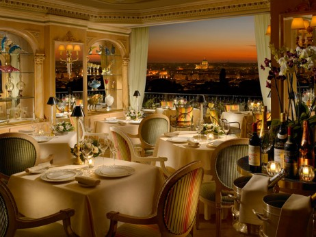

Mumbai (previously known as Bombay until 1996) is a natural
harbor on the west coast of India, and is the capital city of
Maharashtra state. It is India's largest city, and one of the
world's most populous cities. It is the financial capital of
India. The city is the second most-populous in the world.
It has approximately 14 million people.Along with the
neighboring cities of Navi Mumbai and Thane, it forms the
world's 4th largest urban agglomeration. They have around
19.1 million people.
Tourism in Mumbai is an industry that attracts almost 6
million tourists per year, making it the 30th-most visited
location worldwide.With a metro population of approximately 20
million, Mumbai is the largest city in India and the 10th
largest city in the world.
Clockwise from top: Cuffe Parade skyline, Taj Mahal Palace Hotel,
Chhatrapati Shivaji Terminus, Bandra–Worli Sea Link, and the
Gateway of India.
Mumbai offers natural heritage and modern entertainment including
leisure spots, beaches, cinemas, studios, holy places, amusement
parks and historical monuments. Transport options include air, road,
train and ship.
Gateway Of India

One of the most distinguished monument in Mumbai,
The Gateway of India was built in 1924. Now
it has become a popular tourist hub in the city.
Located at Apollo Bunder Waterfront, the monument
overlooks the Arabian Sea in the most beautiful way.
Chhatrapati Shivaji Terminus
Also known as Chhatrapati Shivaji Maharaj Terminus,
the Victoria Terminus is the main railway station
serving Mumbai. Constructed in the Victorian-Gothic
style of architecture, the railway station is a
declared as a World Heritage Site by the UNESCO.
Siddhi Vinayak Temple
Located in Prabhadevi, Siddhivinayak is a Lord Ganesha
temple, one of the most significant and frequented
temples in Mumbai. Visitors visit this temple in large
numbers on daily basis. It was built by Laxman Vithu
and Deubai Patil in 1801. It is one of the richest
temples in Mumbai.
Swimming Pool
Swimming pool The cebtrepiece of our
quadrant garden. Our temperature controlled pool
surrounded by royal palm trees,sun loungers and private
dining tables.
Fitness Center
Fitness Center Eqipped with a range of cardiovascular and
weight machines and supervised by a certified fitness trainers
Treadmills and cycle machines are fitted with personal televisions.
Room
Deluxe Rooms Naturally lit, with a classic colour palette,
clean lines and rich wooden furnishings, a king,queen or twin beds an ensult
bathroom.
Dining

Dining Our fashionable all day dining restaurant. Its offers
specially curated world cuisines that include European,
Asian, Indian and Japanese
Spa
The Spa Therapists well versed in the art of imparting welless and
experience will result in reduce stress,skin revitalisation and relaxation.
and many more.
Rest Room
Rest Room With views of Mumbai's lively cityspace ,our luxury rooms
allows you to immerse youself from the comfort of private ,air-conditioned
rest room.